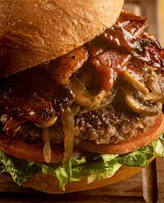

 Introducing the Steakonator: a culinary masterpiece designed for true meat enthusiasts. This delectable burger features a succulent rib-eye steak patty, cooked to perfection and bursting with rich, savory flavor. Topping this juicy patty are sweet, golden caramelized onions, adding a touch of elegance and a hint of sweetness to the robust steak.
But the Steakonator does not stop there. Crispy facon crowns this creation, delivering a delightful crunch and a smokey taste that perfectly complements the tender steak and onions. All of this is nestled within a perfectly toasted bun, providing a warm, soft cradle for the layers of deliciousness.
Each bite of the Steakonator promises an explosion of flavors and textures, making it the ultimate indulgence for those who crave a premium burger experience. Whether you are a die-hard carnivore or simply someone who appreciates a well-crafted burger, the Steakonator is sure to leave you satisfied and eager for more.